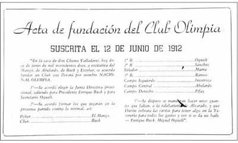
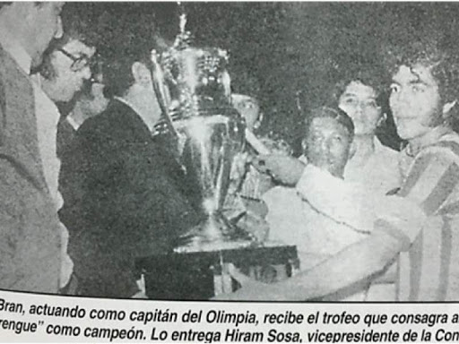
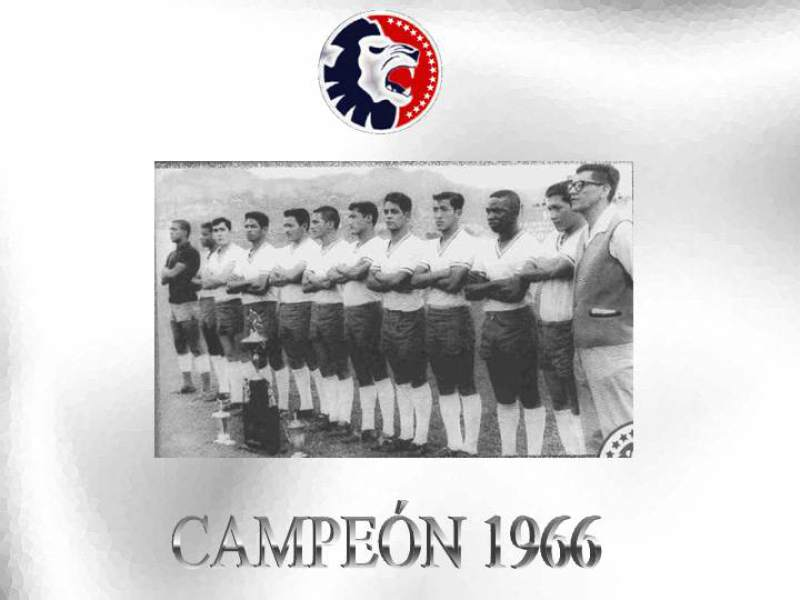

|
|
Inicio |
Partidos |
Historia |
Equipo |
Junta Directiva |
Datos Generales |
HISTORIAClub Olimpia Deportivo |
|
El club fue fundado el 12 de junio de 1912 por Héctor Pineda Ugarte, Carlos Bram, Arturo Bram, Enrique Buk, Santiago Buk, Miguel Sánchez, Samuel Inestrosa Gómez y Ramón Escobar. El club fue bautizado como «Nacional Olimpia», en honor a los juegos olímpicos de la antigüedad llevados a cabo en el valle de Olimpia, Grecia en 1896. Inicialmente, los socios fundadores del Olimpia formaron la institución para la práctica del béisbol. Este deporte, era en aquel entonces el más popular de Honduras, pero con el paso del tiempo, el fútbol fue tomando un gran auge en el país, lo que motivó a sus dirigentes a convertir al Olimpia, en una institución futbolística. El Club Deportivo Olimpia conquistó su primer título a nivel nacional en septiembre de 1928. En aquella oportunidad, el cuadro Albo representando a la zona central, logró imponerse en una serie final de tres encuentros al C. D. Marathón, campeón de la zona norte. A raíz de esta final, se creó una enorme rivalidad entre estas dos escuadras a la cual se le denominó el «Clásico Nacional». A lo largo del torneo inaugural de la Liga Nacional; celebrado en 1965, el Club Olimpia fue un gran protagonista. Sin embargo, una combinación de resultados en la última fecha del torneo, que terminó en victoria por parte del C.D. Platense en contra del España, sumado a una derrota del cuadro ‘Albo’ en contra del C.D. Vida, terminó por darle el campeonato al Platense y así el Olimpia se convirtió en el primer sub-campeón de Liga nacional. Al siguiente año, las cosas fueron diferentes. De la mano del entrenador; Mario Griffin Cubas, el Olimpia terminó por afianzarse en la recién creada Liga nacional y logró su primer título liguero. De los 18 partidos jugados el ‘León’ ganó 14 juegos empató, uno y solamente perdió 3 para un total de 29 puntos; 6 más que el Marathón su más cercano perseguidor. En 1967 Griffin continuó al frente del equipo y el Olimpia repitió título convirtiéndose así, en el primer Bi-campeón de Liga nacional. En el año 1969 el Club Olimpia logró campeonizar de forma invicta. Una marca que se mantiene intacta hasta la fecha. Luego, en 1972 el Olimpia dirigido por Carlos Viera logró su cuarto título a nivel de liga. En este torneo, el equipo de Rigoberto ‘Chula’ Gómez, Jorge Brand, Jorge Urquía, Tonín Mendoza etc. Logró sumar 40 puntos, producto de sus 15 victorias, 10 empates y solamente dos derrotas. Tendrían que pasar 6 años, para que el Olimpia se coronara de nuevo. Los torneos regulares habían pasado de moda y la Liga nacional adoptó el modelo de las ‘Finales’ a través de juegos extras o ‘Play-offs’. Fue así como el España de S.P.S. campeón del torneo regular se enfrentó al ‘León’ como campeón de una serie pentagonal. El primer encuentro terminó empatado a cero goles por bando, pero en el segundo; con goles del uruguayo Walter Chávez al 25′ y René Enamorado al 88′ el Olimpia campeonizó por 5ta. vez en Liga nacional. La década de los ochentas, fue de dominio Olimpista. El ‘León se consagró 5 veces de los 10 torneos disputados. En 1982, el Olimpia ganó las vueltas regulares del torneo y también la pentagonal final. Debido a ello, no hubo necesidad de disputar una final por lo que el ‘Albo’ obtuvo su primer título de ‘Campeonísimo’. Este mismo título, lo obtuvo en 1984 luego de ganar el torneo regular y un torneo cuadrangular. En 1986 el chileno Néstor Matamala encaminó al Olimpia a su tercer título como ‘campeonísimo’ y tercero de la década. Durante las vueltas regulares, el cuadro’ Merengue’ obtuvo 10 ganes, 13 empates y 4 derrotas. 25 goles a favor y 19 en contra. Una vez en la cuadrangular, el equipo de Matamala dejó en el camino a los equipo: España, Vida y Platense con 4 triunfos, 2 empates y ninguna derrota. |

  |


|